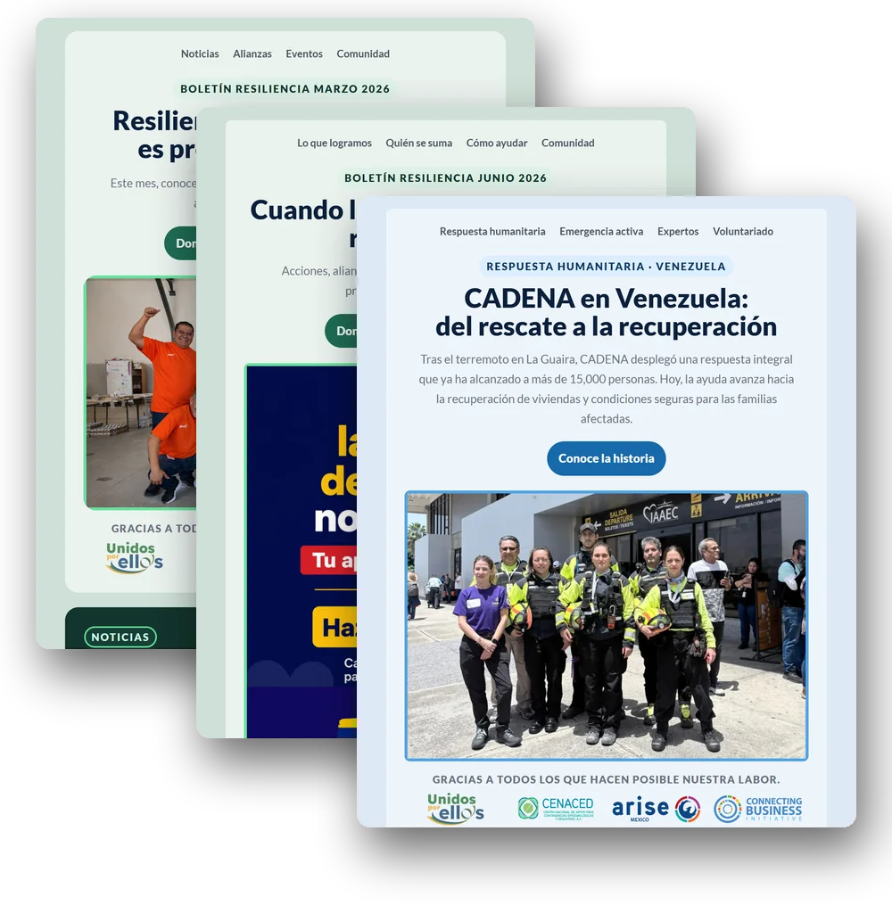
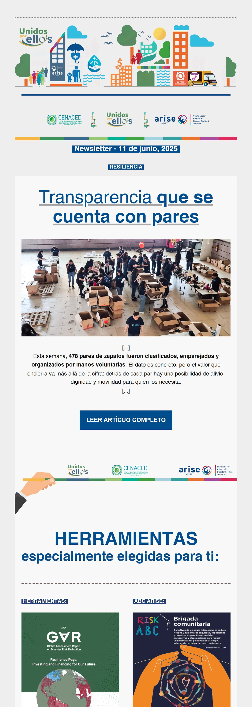
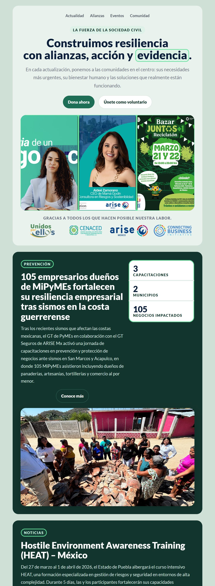
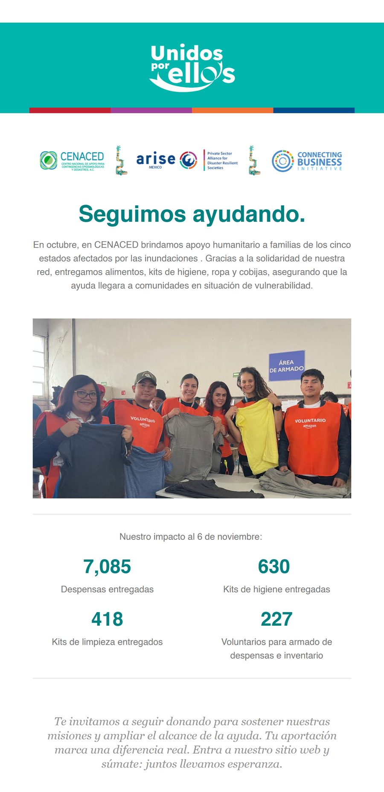
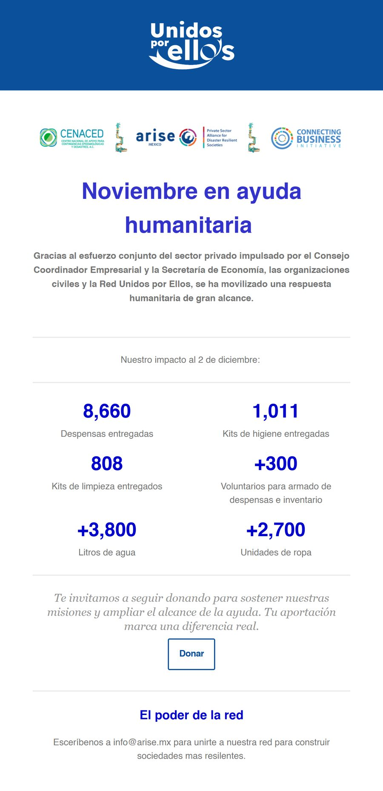
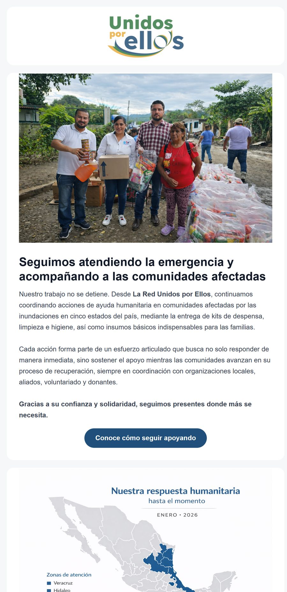
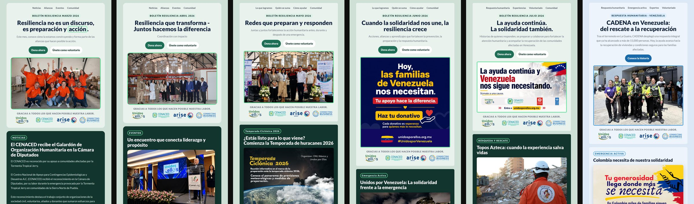

Average across 11 editions. It was 20.3% before.

The monthly newsletter of a disaster-response network in Mexico, shared by ARISE MX and Unidos por Ellxs. I took it over in October 2025 and replaced a layout rebuilt every month with a template the team fills. Open rate went from 20.3% to 27.6%.


The newsletter I inherited opened with an illustration and a date, then pasted the first lines of each article between brackets and sent the reader elsewhere to finish it. Nothing said what the edition was about or what to do next.
My first editions fixed the message: impact figures at the top and one donation button. The design did not follow. Each month was built from scratch — teal in November, blue in December, a different grid in January.



In February 2026 the newsletter got a fixed anatomy: menu, a label on top, one headline, two buttons — donate and volunteer — the partner strip, and dark sections tagged by topic.
Each area of the organization owns a section and sends its content; I edit it and assemble the edition. A new month now changes the stories, not the layout. Every edition since is built on it.

The template is a short list of components with fixed values: 8px corners on cards, 24px padding, pill buttons, one typeface. Colour lives in a handful of values: when August featured partner CADENA, the edition took their blue without touching the layout.
La ayuda continúa. La solidaridad también.
Headline · 36 / 1.05 · 900 · highlight: 2px accent outlineTopos Azteca: cuando la experiencia salva vidas
Card title · 22 / 1.2 · 900Historias de quienes responden, se preparan y colaboran para fortalecer la atención humanitaria.
Body · 16 / 1.7 · 400Zilacayota: la comunidad donde la resiliencia forma parte de su historia
Unidos por Venezuela: la solidaridad frente a la emergencia
La Red Unidos por Ellos activó sus mecanismos de coordinación para impulsar ayuda humanitaria inmediata.
Lee la nota completaOpen rate rose 36% and stopped swinging: every edition since November has landed between 25% and 32%.
Clicks went the other way: 2.0% on average, down from 2.3%, with two editions at 5.7% and 4.2%. The newsletter now gets opened; it doesn't yet get people to act. That is the next problem.
Mailchimp data: 5 newsletters from June to August 2025, against 11 from November 2025 to August 2026. Meeting invitations and alerts excluded.
Average across 11 editions. It was 20.3% before.
7.3 percentage points more opens per edition.
Every edition since November. Before, editions ranged from 18% to 27%.
Down from 2.3%. The next thing to fix.